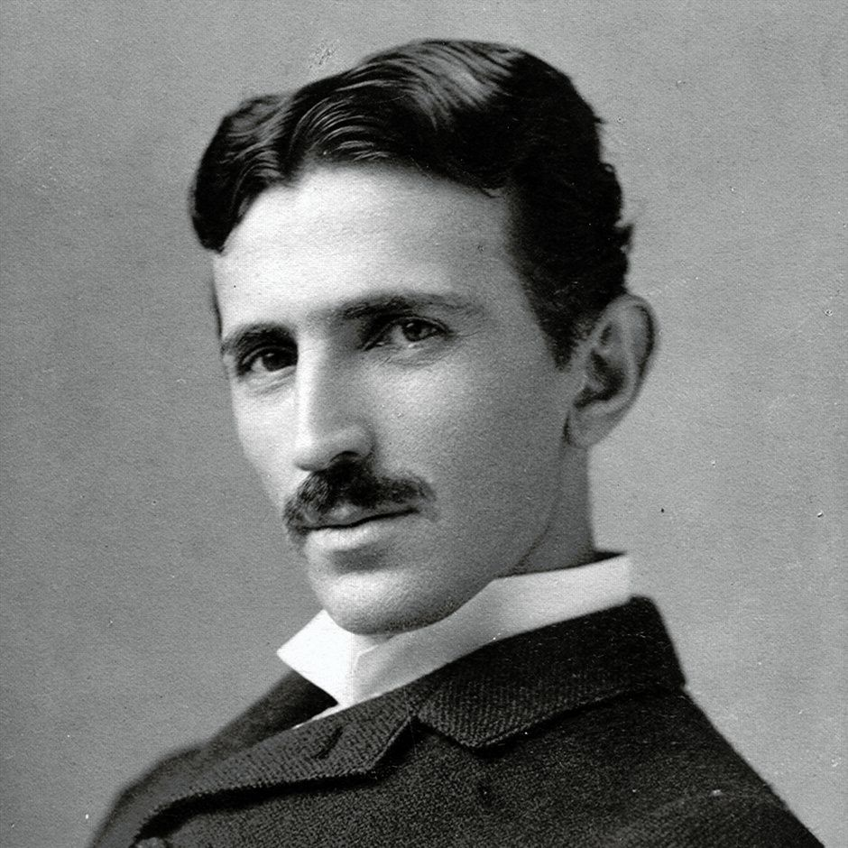

The life of Nikola Tesla
Early childhood
Nikola Tesla was born on July 10, 1856 in Smiljan, Croatia. His mother was an inventor and his father was a priest. His parents wanted him to become a priest like his father, but he had a passion for studying Science. He studied Science at the University of Prague and then started working for the Central Telephone Exchange in Budapest.
Tesla and Edison
At the age of 28, Tesla decided to go to America in pursuit of his desire to create new inventions. Upon moving to the United States, Tesla started working with the famous American inventor, Thomas Edison. While working together, a disagreement occurred between Tesla and Edison over Edison's direct current and Tesla's alternating current. This was also known as the “war of the currents”. Edison lamps were supplied with direct current which made them weak and inefficient. The direct current could not travel for long distances. On the other hand, Tesla's alternating current was able to travel long distances on distribution lines, first in one direction, and then in another in multiple waves.
Tesla Electric Light Company
The disagreements created a lot of bitterness between the two scientists and Tesla eventually left Edison to create his own company called the Tesla Electric Light Company. His work caught the attention of another American inventor, George Westinghouse. They joined hands and started working together to generate electricity for the nation. Edison and Tesla were now in direct competition for providing America with energy and power. In 1893, Tesla's AC electrical system was selected over Edison's at the World's Columbian Exposition in Chicago. It was a big accomplishment for Tesla. But, as luck would have it, Westinghouse ran into financial trouble and Tesla had to walk out of the partnership by selling his patent.
Wireless Broadcasting System
In 1896, Tesla created the world's first hydroelectric power plant, which brought power to the city of Buffalo, New York. This invention brought Tesla considerable fame and recognition for a short while. During 1899 to 1900, Tesla continued to experiment with electricity and radio frequency magnetic waves in his laboratory based in Colorado. In 1900, supported by financier J.P. Morgan, Tesla started construction of a “Wireless Broadcasting System” tower on Long Island, New York. The aim of constructing this tower was to connect telephone and telegraph services, as well as broadcast images, reports, and weather information to every corner of the world. But due to certain reasons, J.P. Morgan had to cut funding and the tower had to be sold off.
Research gets stolen
Tesla never had the gods of destiny working in his favor and there was more to come. During this period of turmoil, Tesla's research work was stolen and used as their own by his contemporary scientists. Marconi is alleged to have passed off Tesla's work on long-distance radio transmission as his own. Tesla decided to sue Marconi but it was too late. Though Tesla's patents were prior to Marconi, the national press was out rightly supporting Marconi and the judge did not know a thing about modern technology. Naturally, Tesla lost his case. Much later, in 1943, the US Supreme court conducted a detailed investigation, reversed the old decision given by the court and granted recognition to Tesla, nullifying Marconi patents.
Death
You would be surprised to know that Tesla had over 800 different patents to his name, and despite that he was penniless. Ridicule from his own colleagues, lack of recognition by the public, drove him into a life of depression and self-imposed exile. He started jotting down his theories and research activities in his diaries and notebooks instead of getting them published anywhere. It is absolutely ironical that the man who invented the modern world died a pauper in a lonely hotel room on January 7, 1943 at the age of 86. Half a century after his death, scientists are still trying to comprehend and study his various theories. Many of them are just now being proven. It is indeed sad that we never managed to recognize and appreciate a true genius like Tesla in his lifetime.